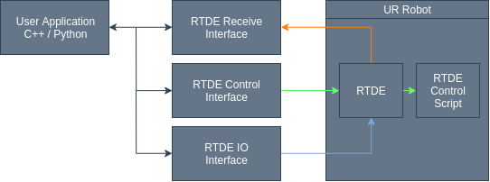

Introduction¶
ur_rtde makes the following interfaces available:
The RTDE Control interface is primarily used for moving the robot and utility functions. The RTDE Control interface requires a control script to be running on the robot, which is uploaded automatically (Green). The RTDE Receive interface is used for receiving data from the robot (Orange). Finally the RTDE IO interface is used for setting digital / analog IO’s and adjusting the speed slider of the robot (Blue).
The reason for splitting control and IO into two different interfaces is to allow for controlling the IO’s while the robot is moving or performing another task. So the user has a separate interface to control the digital / analog IO’s and speed slider that will not interfere with the rtde_control script.
Note
Please notice the speed, servo and force commands of the RTDE Control interface are non-blocking, because they need to be called continuously with a new target. However other movements and commands performed through the interface is blocking by default and will only return once the movement is finished, or a timeout has occurred. This has the benefit that the user won’t have to manually check if the robot is finished with the movement. The move commands eg. moveJ or moveL can also be used in a non-blocking way, if their async flag is set to ‘true’ when calling the commands, see Move Asynchronous Example